Bantu e.V. · International cooperation
Progress report · 1 June to 30 September 2023 · Uganda
Early detection, identification, referral and interventions for children with cerebral palsy.
From June to September 2023, the EDIRI pilot project brought early support for children with cerebral palsy closer to families in south-western Uganda. The partnership between OURS, Anchored Bridges Initiatives and Bantu e.V. combined home follow-up, health worker training, community outreach and radio awareness. Home visits reached 38 children, and parents in Rwampara formed a support group to share knowledge and advocate for their children.
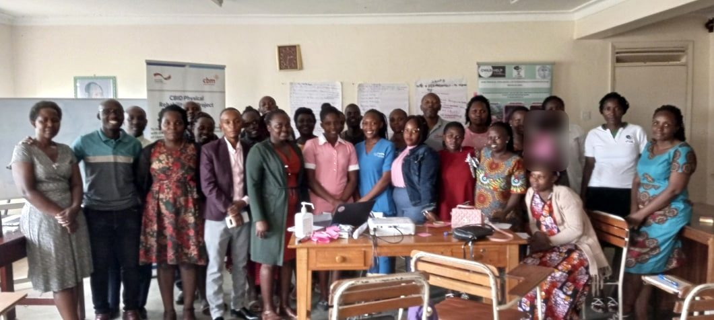
Organised Useful Rehabilitation Services (OURS) is a community-based rehabilitation and inclusive development programme founded by Ankole Diocese in 1995 and operating under Ruharo Mission Hospital. Its services support children aged 0 to 18 with neurological and physical disabilities in south-western and western Uganda and neighbouring countries.
At the time of the pilot, OURS reported providing rehabilitation services to more than 3,000 children annually and registering over 500 new children each year, 40.3% of whom had cerebral palsy. The EDIRI pilot focused on children aged 0 to 5 and sought to improve access to early detection, identification, referral and interventions through support for children, caregivers, health workers and community structures.
| Activity | Planned | Reported delivery |
|---|---|---|
| Stakeholder inception meetings | 2 meetings 40 people | 2 meetings; 40 participants 23 men and 17 women |
| Primary health worker workshop | 1 workshop 40 people | 1 workshop; 26 participants 9 men and 17 women; 65% of target |
| Home follow-up | All planned visits | All planned visits completed 38 children reached |
| Community outreach | 3 outreaches | 3 outreaches completed in Rwampara, Isingiro and Rukungiri |
| Hospital sensitization | 2 sessions 40 people | 2 sessions; 35 health workers 87.5% of target |
| Assistive devices and therapy materials | Provision of items | CP seats, crutches and assorted therapy toys procured |
Participation figures relate to separate activities and should not be added as a count of unique people.
Two inception meetings in Rwampara District and Mbarara City North brought together 40 community stakeholders, meeting the planned target. Participants included 23 men and 17 women drawn from community development offices, police family protection units, probation services and local political leadership.
The meetings introduced the pilot and promoted the inclusion of children with cerebral palsy. Local authorities asked the project team for an updated list of children with disabilities in their communities so that local government structures could better identify where support was needed.
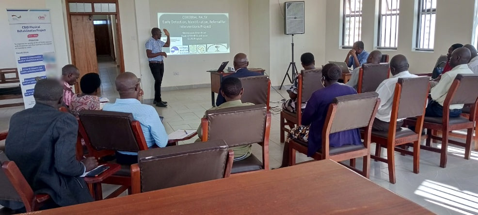
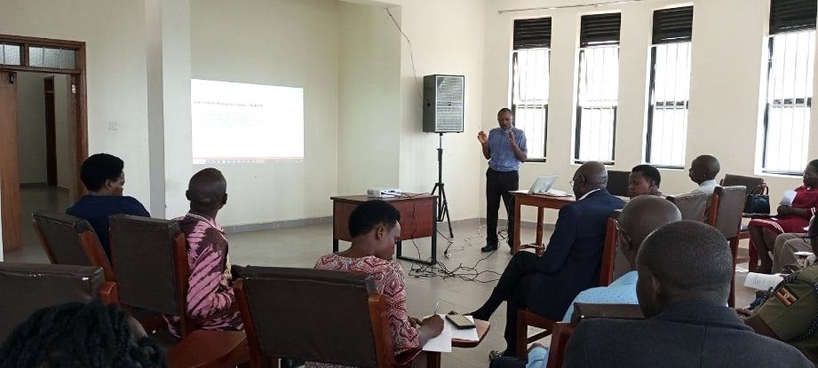
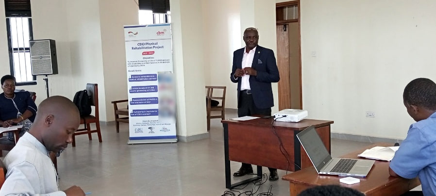
One workshop brought together 26 primary health care workers from health facilities in Mbarara City North and Rwampara District. Nine men and 17 women participated, representing 65% of the target of 40 health workers. Sessions addressed early detection, identification, referral and interventions for children with cerebral palsy.
Participants worked in groups to discuss issues affecting early identification and access to care. Attendance fell below target because the workshop coincided with government programmes, and the four-month implementation period left limited scope to arrange further training.
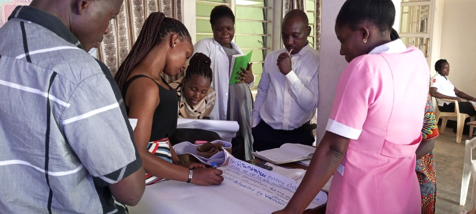
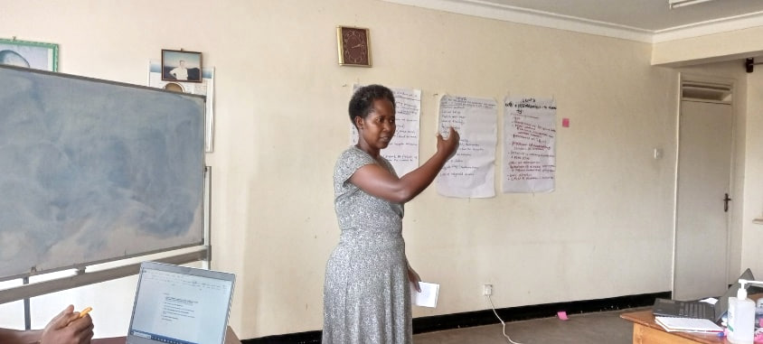
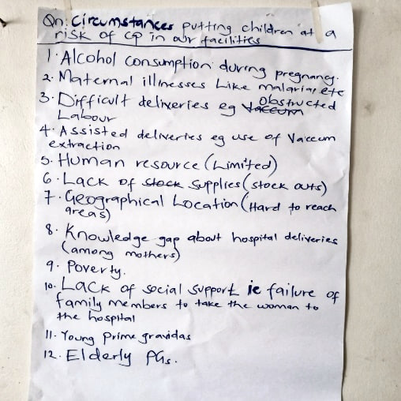
The flipchart records participants’ discussion points and is not clinical guidance.
The project completed all planned home follow-up visits, reaching 38 children with cerebral palsy. Therapists worked with caregivers and other household members on practical ways to support children in activities of daily living. Home-based health education also addressed gaps in knowledge about care and rehabilitation.
The visits highlighted the need for regular follow-up and practical training within children’s own homes and communities. Continued support would help caregivers build on the skills introduced during the pilot.
The project procured cerebral palsy seats and crutches, together with soft balls, blocks, toy shakers and building blocks for therapy. These items were intended to support functioning, mobility and independence.
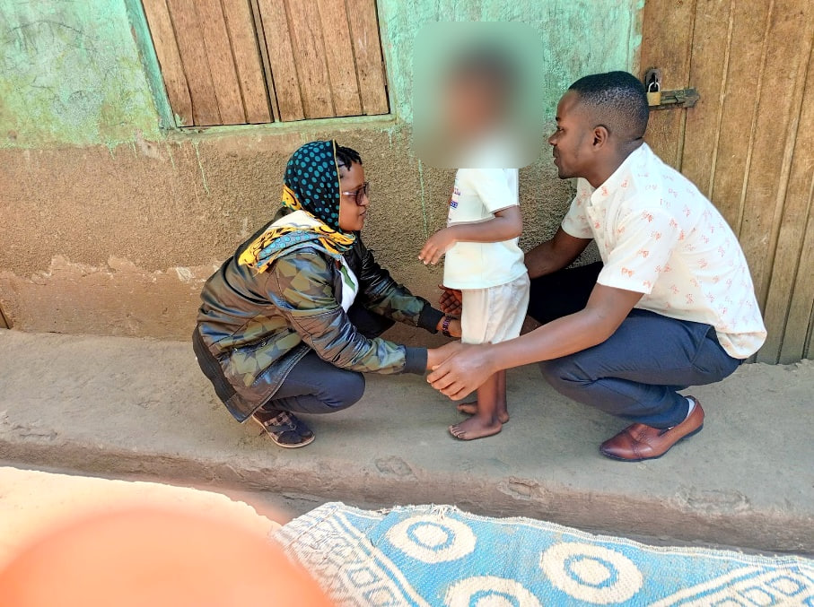
All three planned community outreaches took place: one in Rwampara and two in the neighbouring districts of Isingiro and Rukungiri. Radio programming accompanied the outreach work to raise awareness of disability, cerebral palsy and the value of early support.
The team reported increased demand from parents and caregivers seeking early interventions after the outreach activities. Parents from Rwampara and surrounding areas formed a support group for advocacy, lobbying and knowledge sharing. The team identified interest in establishing further groups if additional support became available.
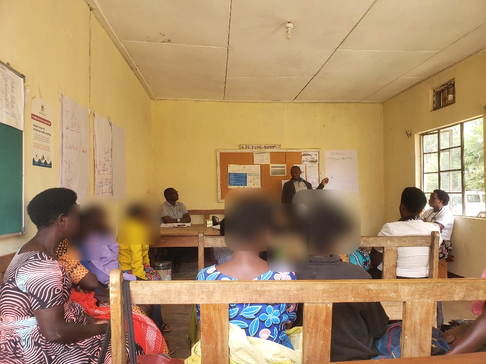
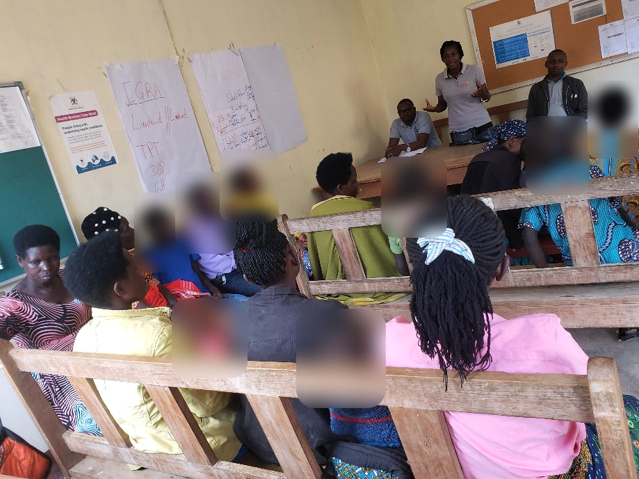
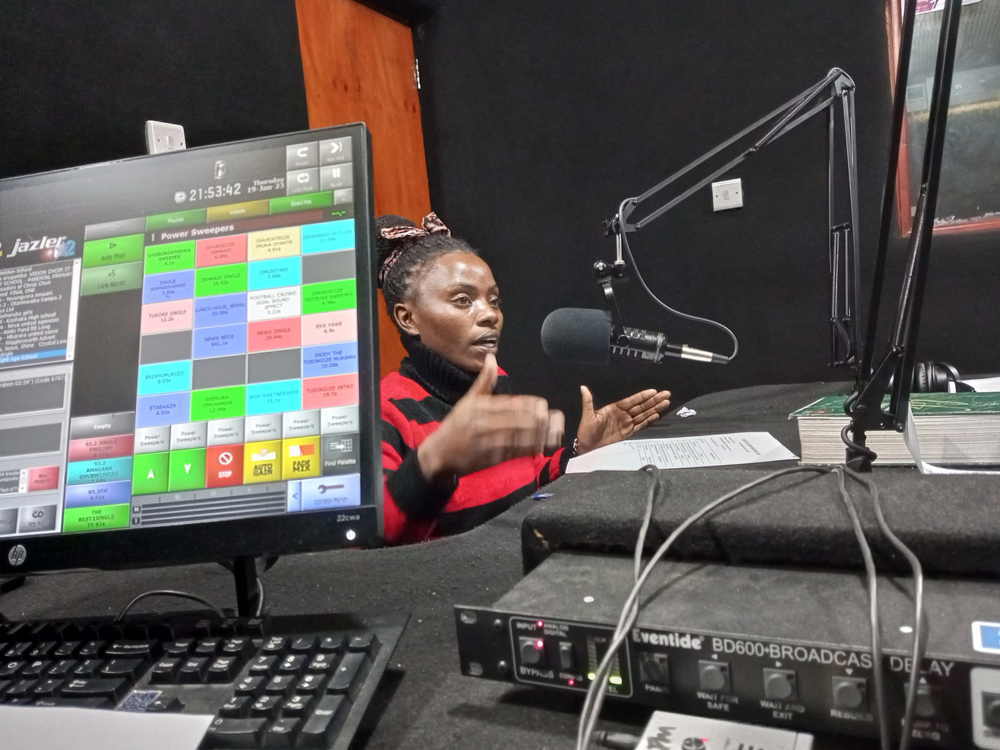
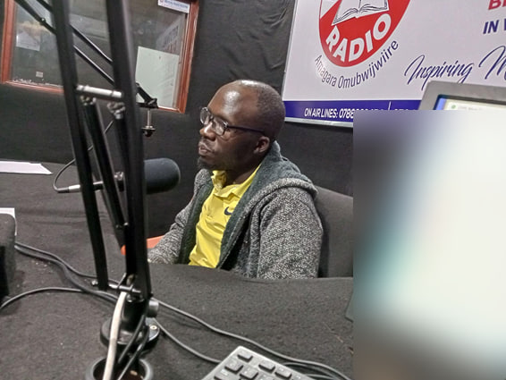
Hospital sensitization sessions took place at Devine Mercy Hospital and Mbarara Community Hospital on 15 and 21 August 2023. The sessions reached 35 of the 40 intended health workers, or 87.5% of the target, and addressed early identification and interventions for disabilities, including cerebral palsy.
Participants recommended a clear referral pathway and follow-up plan shared among stakeholders. They also requested similar sessions for the nursing schools attached to the institutions. The limited implementation period constrained the number of staff reached.
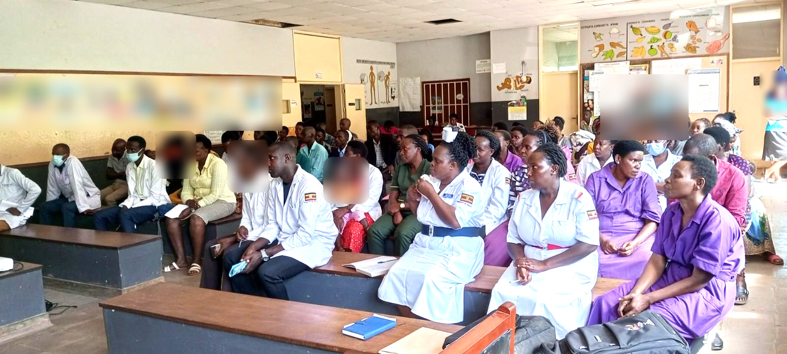
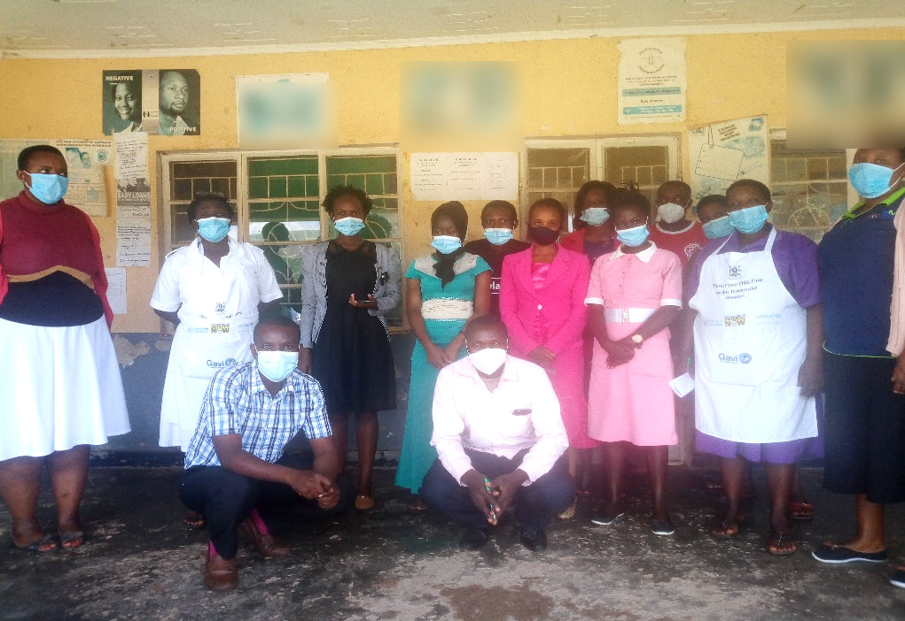
Knowledge gaps and stigma continued to affect children with cerebral palsy and their families. The team recommended sustained community awareness work, radio programming and outreach so that more families could recognise available support and seek services earlier.
Further training for health workers, medical training institutions and community structures was identified as a priority. Participants called for practical referral and follow-up arrangements and for sensitization to extend to nursing schools.
Regular home follow-up and caregiver training would help families continue the work introduced during the pilot. The parent support group in Rwampara offered a basis for peer learning and advocacy, with scope for additional groups and wider geographical coverage as resources allowed.
The four-month pilot delivered home-based support to 38 children, completed the planned community outreaches and engaged community leaders and health workers in early detection and referral. OURS expressed its appreciation to ABI, Bantu e.V. and partners in Germany. The programme requested continued support, subject to available resources, to reach more children with cerebral palsy and their families.
Download the complete progress report as a PDF
Organised Useful Rehabilitation Services and Ruharo Mission Hospital · Anchored Bridges Initiatives · Bantu e.V.
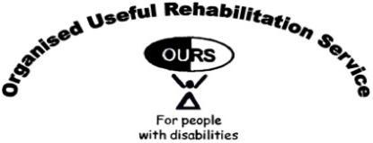
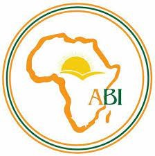
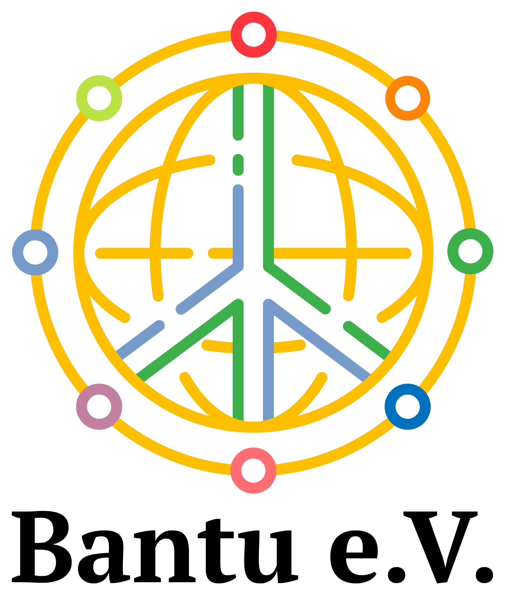
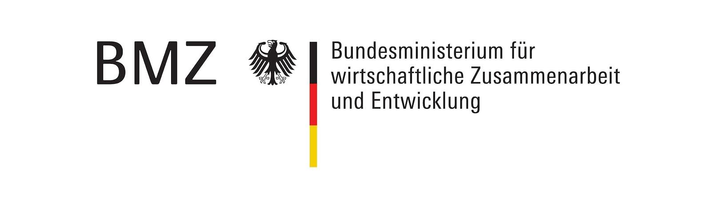
Original report submitted by Aaron Ndyowaawe, Programme Administrator, OURS. Source record dated 9 November 2023.